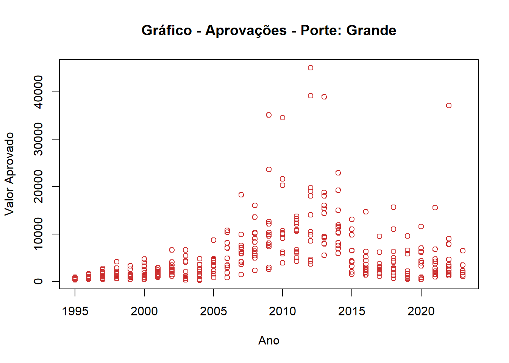
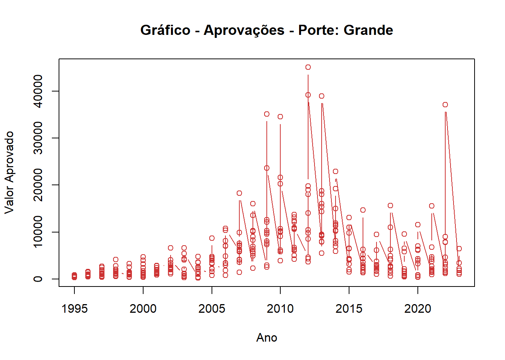
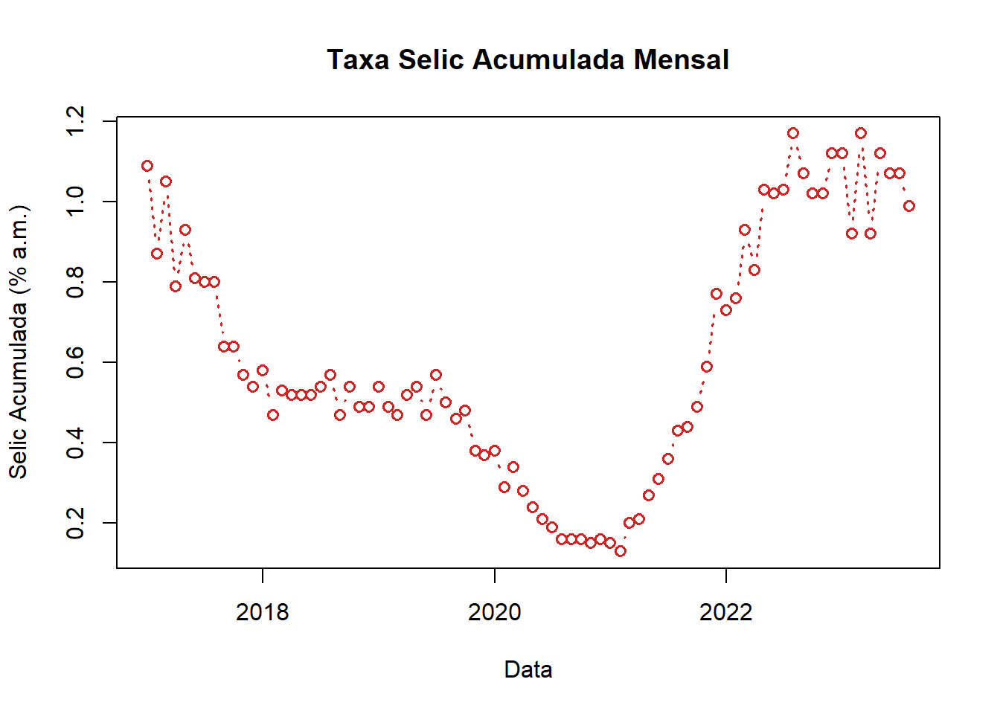

df_aprovacoes <- readRDS('data/aprovacoes_por_porte_de_empresa_aprovacoes.RDS')
plot(x = df_aprovacoes$ANO, y = df_aprovacoes$GRANDE)13 Gráficos
Status üü®üü®üü®
13.1 Introdução
R oferece uma série de funções nativas para criação de gráficos. Estas funções possuem muitos parâmetros que permitem melhorar visualamente as apreesentações dos gráficos.
Abaixo um exemplo de um gráfico de criado com a função plot do pacote graphics. Os argumentos x e y são usados nas coordenadas e já são suficientes para a geração de um gráfico.
Podemos customizar com diversos parâmetros. Por exemplo main é o argumento que define o título do gráfico, enquanto que xlab e ylab são os labels dos eixos. O argumento col define a cor. Note que o R possui muitas cores que podem ser identificadas como strings. Você pode ver as disponíveis com a função colors.
plot(df_aprovacoes$ANO, df_aprovacoes$GRANDE,
col ='brown3', main = 'Gráfico - Aprovações - Porte: Grande',
xlab = 'Ano', ylab = 'Valor Aprovado')
Veja que o gráfico foi exibido com pontos para os valores. O parâmetro type permite outras opções:
p(padrão): pontosl: linhasb: pontos e linhasc: pontos ‘vazios’ ligados por linhas
Obviamente, nem todos os tipos de gráficos se enquadram para todos os tipos de dados. Se usarmos um gráfico de pontos e linhas nos dados do exemplo acima, as linhas não farão muito sentido.
plot(df_aprovacoes$ANO, df_aprovacoes$GRANDE,
type = 'b',
col ='brown3',
main = 'Gráfico - Aprovações - Porte: Grande',
xlab = 'Ano', ylab = 'Valor Aprovado')
Podemos criar um gráfico de linhas com a base de dados da Taxa Selic Acumulado no Mês divulgada pelo Banco Central do Brasil. Vamos utilizar os parâmetros lty (de line type) para determinar o tipo de linha e lwd (de line width) para determinar a largura da linha.
df_taxa_selic <- read.csv2('./data/csv_serie_sgs_4390.csv',
dec = ',', quote = '\"',
col.names = c('DATA', 'SELIC'))
# formatar data
df_taxa_selic$DATA <- as.Date(df_taxa_selic$DATA, format = '%d/%m/%Y')
# filtrar a partir de 2017
df_taxa_selic <- df_taxa_selic |>
subset(DATA >= '2017-01-01')
plot(df_taxa_selic$DATA, df_taxa_selic$SELIC,
type = 'b', col ='firebrick3', lty = 3, lwd = 1.5,
main = 'Taxa Selic Acumulada Mensal',
xlab = 'Data', ylab = 'Selic Acumulada (% a.m.)')
13.2 Histograma
Abaixo um exemplo de um histograma:
hist(df_taxa_selic$SELIC, col ='cyan4',
main = 'Selic',
xlab = 'Taxa Selic',
ylab = 'Qtde')hist(df_aprovacoes$PEQUENA, col = 'cyan3',
main = 'Aprovações - Porte: Pequena',
xlab = 'Valor - Aprovações',
ylab = 'Qtde')Kassambara (s.d.)
Schmuller (2019)
Última atualização: 21/09/2023 - 20:16:50